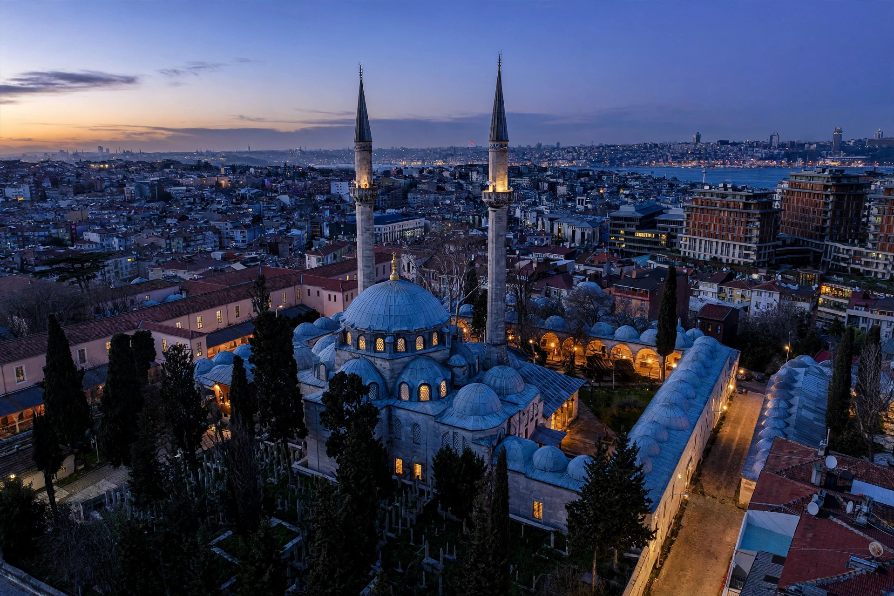

| Nurbanu Sultan | |
|---|---|
| Born | c. 1525, possibly Paros or Corfu |
| Died | 7 December 1583, Istanbul |
| Spouse | Selim II |
| Issue | Murad III, and daughters including Ismihan Sultan |
| Title | Haseki Sultan; Valide Sultan (1574–1583) |
Nurbanu Sultan (c. 1525 – 7 December 1583) was the Haseki Sultan of the Ottoman Sultan Selim II and Valide Sultan to her son Murad III. One of the most prominent figures of the period known as the Sultanate of Women, she wielded great political influence for nearly a decade as queen mother of the Ottoman Empire.
Nurbanu's origins are debated; she is often identified as a Venetian noblewoman captured by the corsair admiral Hayreddin Barbarossa around 1537 and brought to Istanbul. She became the favourite consort of Şehzade Selim, and when he ascended the throne as Selim II in 1566 she became Haseki Sultan.
Upon Selim's death in 1574, Nurbanu concealed the sultan's death until her son Murad arrived from Manisa to take the throne — a move that secured the succession. As Valide Sultan she effectively co-governed, maintained pro-Venetian and later pro-French diplomatic policies, and corresponded with Catherine de' Medici of France. She commissioned the great Atik Valide mosque complex in Üsküdar, designed by the architect Sinan, which included a hospital, caravanserai, and soup kitchen. She died in 1583 and was buried beside Selim II at Hagia Sophia.
See also: Selim II, Murad III, Haseki Sultan, Valide Sultan.